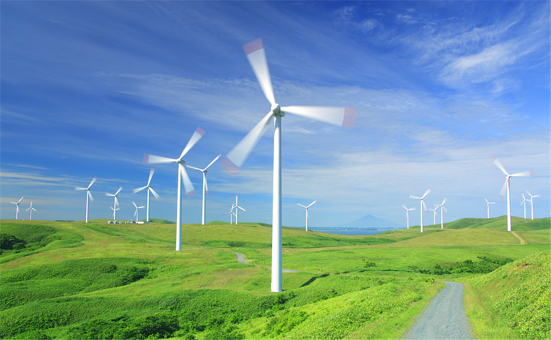
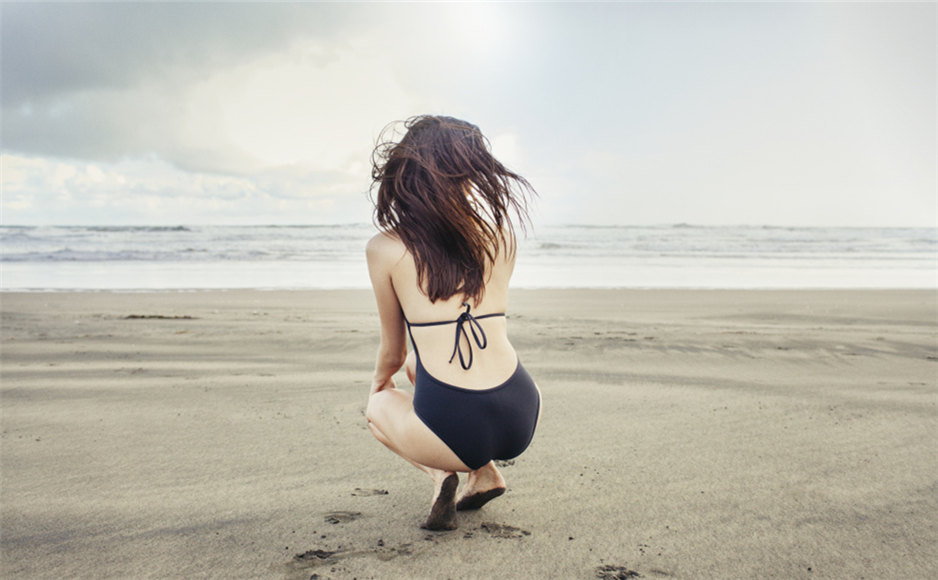
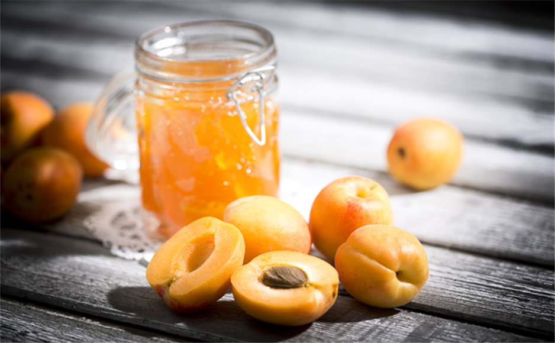
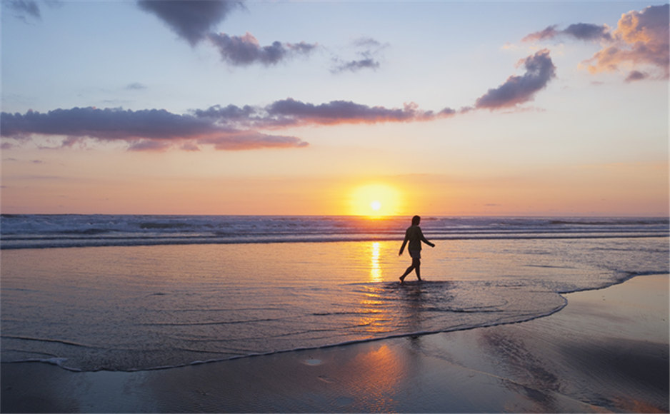

每日一句
A man has free choice to begin love, but not to end it.
一个人可以选择爱上谁，当他要结束爱情时，他是没有选择的。
There are more things in heaven and earth than you've ever dream of.
天地之大，比你所能梦想到的更多。
If you reveal your secrets to the wind, you should not blame the wind for revealing them to the trees.
不要把秘密传给风，风会传遍整个森林。
I would die for you. But I wouldn't live for you.
我愿意为你赴死，但不会指望你而活。
There are no easy answers, there's only living through the questions.
生活从来没有容易的答案，只有去克服重重问题。
I can't control their fear, only my own.
我不能掌控他人的恐惧，只能掌控自己的
The longest day has an end.
最难过的日子也有尽头。
Sometimes it's hard to accept the truth because the lies sound so much better.
真相有时之所以难以被接受，是因为谎言听起来美好多了。
It does not do well to depend on dreams and forget to live, remember that.
记住：不要依赖梦想而忘记生活
We laughed and kept saying see you soon, but inside we both knew we'd never see each other again.
我们笑着说再见，却深知再见遥遥无期。
Had I not seen the sun, I could have borne the shade.
我本可以忍受黑暗，如果我不曾见过太阳。
Sometimes it is the very people who no one imagines anything of who do the things that no one can imagine.
有时候正是人们以为的无用之人成就无人敢想之事。
Had I not seen the sun, I could have borne the shade.
我本可以忍受黑暗，如果我不曾见过太阳。